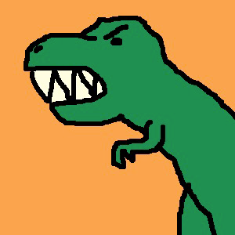
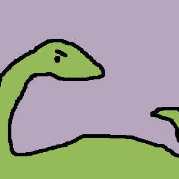
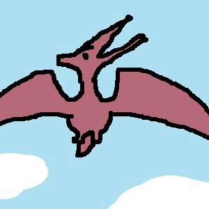
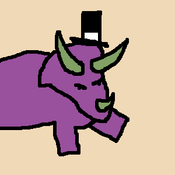
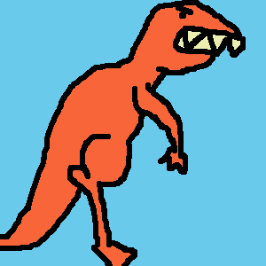

- 
- 
- 
- 
- 

GRRRWOOOOAAA
Ben jij een fan van dino's? En van Paint? Dan is dit je geluksdag! Dinosaurussen in Paint is een website die dino's combineert met kunst, om zo tot een post-moderne mengelmoes te komen die het kinderlijke van eenvoudige painttekeningen harmonieus samenbrengt met de gevaarlijke dino's!
Pers over Dinosaurussen met Paint:
"...een interessante commentaar van binnenuit!" (De Standaaard)
"Zodoende blijkt Dinosaurussen met Paint meer dan aan gimmick, en in tegendeel zelfs een waardevol commentaar op huidige beeldvorming." (hEye)